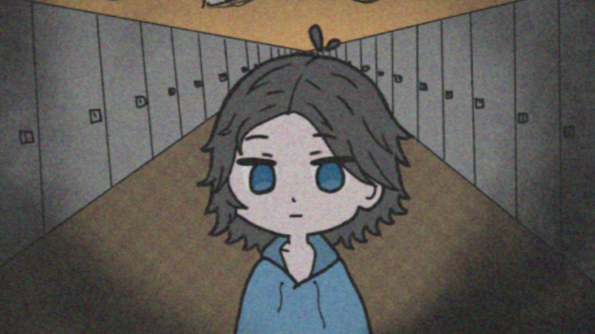
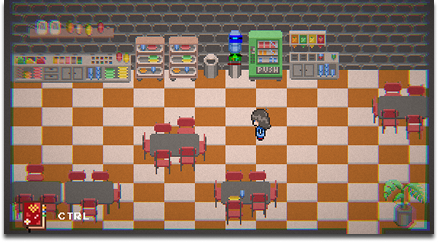
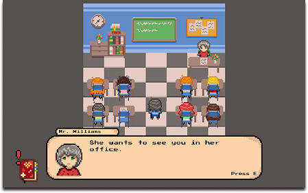

JUST ONE MORE DAY
CONCEPT
"Just one more day" is a Top-down, Psychological narrative game set in a high school. At first, it feels like just another day, until it doesn't.
MADE BY: Sanne Johanne Hermansen
My Role: Narrative, Background Art, & Music
Made with Unity


CONCEPT
"Just one more day" is a Top-down, Psychological narrative game set in a high school...
MADE BY: Sanne Johanne Hermansen
My Role: Narrative, Background Art, & Music
Made with Unity
CONCEPT
Another description of the project...
